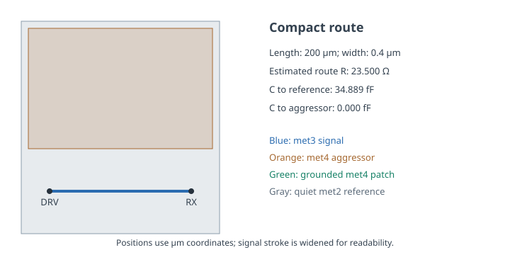
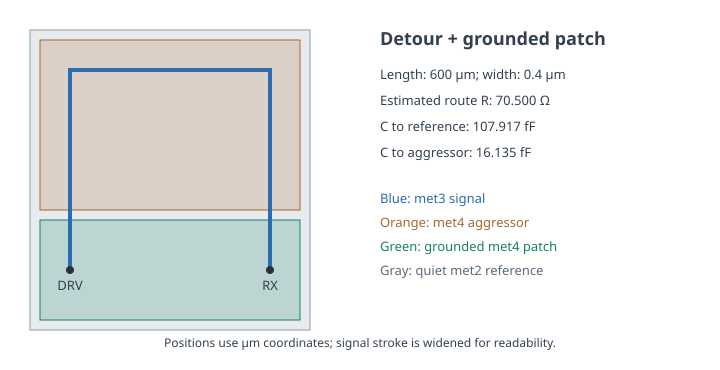
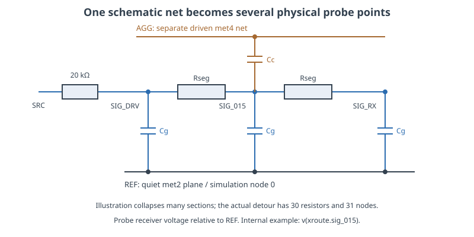
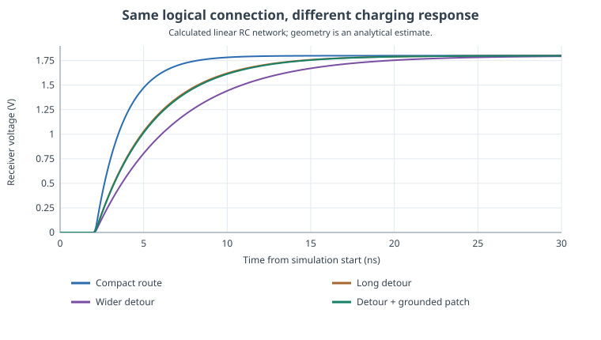
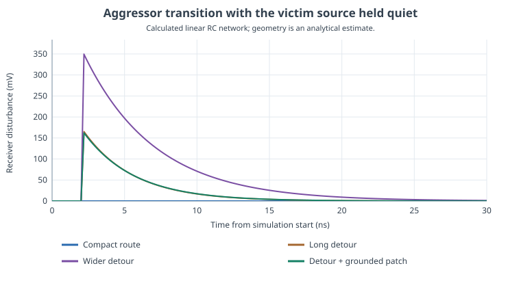

Geometry, RC & Post-Layout Response
Keep the logical connection unchanged. Change the route and its surroundings. Generate a distributed network and measure what reaches the receiver.
- Four explicit route geometries with the same signal terminals.
- Generated RC SPICE networks and coordinate-to-probe maps.
- Step-response, precision-settling and aggressor-coupling measurements.
- A controlled comparison showing how surrounding metal can create dynamic mismatch.
What was actually run: eight ngspice 44.2 transient simulations of generated linear RC networks, with a finer-segmentation/time-step repeat and an independent Python integration comparison. The RC networks are analytical geometry estimates, not foundry-qualified extraction. This lab did not run Magic, GDS extraction, DRC, LVS or SKY130 transistor models. Its drawings are geometry illustrations. An optional genuine-PDK extraction extension is separately marked unexecuted.
1. Start with a prediction
A schematic line has no length or width. A physical conductor does. Consider a high-impedance analog signal or a weakly driven control node connected to a capacitive receiver. Will a wider route always settle faster? Will two identical transistors still receive identical waveforms after different surrounding metal is added? This lab turns those questions into reproducible calculations.
The source resistance is deliberately large: 20 kΩ. This makes loading differences easy to see and represents a teaching assumption, not a standard-cell output model. The receiver is an assumed 50 fF capacitor. There are no nonlinear devices, clamps or thresholds in the network. A 0.9 V crossing is a measurement definition; it does not simulate a CMOS gate's switching behavior.
Before running, predict the ordering of resistance, capacitive loading, 50% delay and coupling peak. Separate these predictions. A route can improve one quantity while worsening another. Preserve your initial answers so that the measured result explains a physical tradeoff rather than becoming a number to memorize.
2. Run the supplied files
Open the extracted course folder and enter labs/L04_layout_extraction. The lab needs Python 3.10 or newer; its estimator, exporter, plotting and fallback solver use the standard library. No PDK download is needed. The detailed file map and troubleshooting notes are in the lab README.
python3 run_lab.py
# Require a local ngspice executable:
python3 run_lab.py --engine ngspice --ngspice /absolute/path/to/ngspice
# Or deliberately use the supplied independent Python solver:
python3 run_lab.py --engine builtin --output python_resultsThe default searches for ngspice on PATH or through the NGSPICE environment variable, then uses the Python solver if none is available. The selected engine is printed and recorded. New runs write to run_results/; the shipped results/ remain available for comparison. To reproduce one exported ngspice bench manually, run it from its decks/ directory so its relative includes resolve correctly.
| File | What you can inspect |
|---|---|
| run_lab.py | Every estimation equation, simulator command, measurement and plot |
| sky130_coefficients.json | Published coefficients, units, source snapshot hash and limitations |
| geometry/02_detour.json | An editable path, width, reference plane and aggressor rectangle, in µm |
| results/summary.json | Actual reference results, engine version, settings and input hashes |
| verification.json | Performed refinement and independent-solver comparisons |
3. Keep connectivity fixed; change geometry
All routes begin at (20,40) µm and end at (220,40) µm. A broad met2 reference plane lies underneath. The signal is met3. A driven met4 rectangle overlaps the upper part of the detours. These are distinct electrical conductors on different layers; drawing one above another does not short them.
| Case | Route | Width | Controlled change |
|---|---|---|---|
| Compact | Direct, 200 µm | 0.4 µm | Baseline; no upper-aggressor area overlap |
| Detour | Via (20,240) and (220,240), 600 µm | 0.4 µm | Longer route and upper-aggressor overlap |
| Wide detour | Same 600 µm centerline | 1.2 µm | Width tripled |
| Detour + grounded patch | Same narrow detour | 0.4 µm | Additional separate met4 region tied to the reference |


The compact-to-detour comparison changes both length and overlap intentionally. The detour-to-wide comparison isolates width. The detour-to-patched comparison isolates an additional grounded upper conductor. Use the latter two comparisons when attributing an effect to one changed feature.
4. Understand exactly what is estimated
The public SKY130 RCX tables provide the following coefficients. Their use makes the arithmetic process-informed, but it does not turn a short script into a calibrated extraction deck.
| Coefficient | Value used | Unit conversion to watch |
|---|---|---|
| met3 sheet resistance | 0.047 Ω/□ | 47 mΩ/□ is not 47 Ω/□ |
| met2–met3 area capacitance | 86.1861 aF/µm² | Multiply by area, then use 1 aF = 10⁻¹⁸ F |
| met3 toward a large lower met2 plate: fringe | 69.846 aF/µm | Multiply by exposed perimeter length |
| met3–met4 area capacitance | 84.0346 aF/µm² | Only overlapped area is used for upper conductors here |
For a segment, R = RsheetΔL/W. Its lower reference capacitance is CareaWΔL + 2CfringeΔL. The two physical end-edge fringe terms are added once to the complete route, not once per numerical section. Upper overlap capacitance goes to the aggressor or reference according to the upper conductor's net identity. Each segment's capacitance is split between its two endpoints.
Independent hand check: the compact route has 500 squares, so R = 23.5 Ω. Its 80 µm² area contributes 6.894888 fF, and its idealized 400.8 µm perimeter contributes 27.9942768 fF. Their sum is 34.8891648 fF. Splitting that route into more sections must not increase this total.
The source describes its fringe values using a small plate facing a much larger plate. Applying that approximation to a long route is an explicit simplification. This lab omits upper fringe, lateral coupling, field redistribution, corner/width corrections, vias, contact and device parasitics except the assumed receiver load, substrate paths, temperature and package effects. The compact route's computed zero mutual capacitance means zero modeled overlap contribution, not perfect physical isolation.
5. Inspect the network before trusting a waveform

The default segmentation is at most 20 µm, giving 10 compact-route resistors or 30 detour resistors. The exporter creates .subckt ROUTE SIG_DRV SIG_RX AGG REF. All four ports have physical meaning. The testbench connects REF to node 0, drives AGG independently, and places the 50 fF receiver load at SIG_RX.
Open the detour network and its probe map. The default midpoint is SIG_015 at (120,240) µm, accessed as v(xroute.sig_015) in ngspice. This name is not stable under resegmentation; coordinates and terminal roles identify the intended point. A driver and receiver can share schematic net SIG while having different transient voltages across the intervening resistors.
6. Run and interpret the step experiment
The source ramps from 0 to 1.8 V beginning at 2 ns and ending at 2.2 ns; the aggressor remains quiet. The simulation continues to 60 ns. The 50% delay is the receiver's 0.9 V crossing minus the source's 0.9 V crossing. Precision settling uses the last exit from a ±219.727 µV band around 1.8 V, corresponding to half a 12-bit LSB. Its reported time begins at the ramp's end.

| Case | R, Ω | C to REF, fF | C to AGG, fF | 50% delay, ns | Half-LSB settling after ramp, ns |
|---|---|---|---|---|---|
| Compact | 23.5 | 34.8892 | 0* | 1.1790 | 15.2113 |
| Detour | 70.5 | 104.5557 | 16.1346 | 2.3728 | 30.7142 |
| Wide detour | 23.5 | 146.0368 | 48.4039 | 3.3917 | 43.9758 |
| Detour + patch | 70.5 | 107.9171 | 16.1346 | 2.4195 | 31.3205 |
*Zero upper area overlap in this restricted model. C to REF excludes the separate 50 fF receiver load.
Do not interpret the 1.179 ns compact delay as its precision acquisition time. A 50% crossing leaves a large remaining error. Conversely, the half-LSB requirement is an imposed analog accuracy criterion, not a prediction of the behavior of a complete ADC. Inspect the logarithmic settling-error plot to see how much longer the final error band takes.

Check: why is the wide detour slower despite matching the compact route's R?
Its capacitance to the lower reference is larger, and its overlap capacitance to the quiet aggressor is larger. Both load the source in this experiment. The source resistance is 20,000 Ω, much greater than either wire's 23.5 Ω. Lower wire resistance therefore cannot compensate for the added loading under these assumptions.
7. Switch the aggressor while holding the victim source quiet
In the second experiment, the signal source stays at zero through 20 kΩ, and AGG makes the same 1.8 V ramp. Mutual capacitance injects current proportional to the rate of change of voltage across it. The victim rises temporarily and then discharges through its network. The victim is weakly held, not floating.

The wide route increases both helpful reference capacitance and harmful mutual capacitance. The resulting disturbance depends on the complete network and finite rise time, not a single “capacitance is good” rule. A much stronger source, a slower aggressor, or a different receiver load would change the result. Nonlinear receiver devices and clamps would also change large disturbances and are absent here.
8. Use the patch to study post-fill matching
The added grounded patch overlaps 40 µm² of the narrow route. The assumed upper area rule adds 40 × 84.0346 aF = 3.361384 fF. At 10 ns the unpatched receiver is 1.621255 V and the patched receiver is 1.613106 V: a difference of 8.149249 mV. Both approach 1.8 V at DC. A static equality check therefore misses the dynamic difference.
This is a controlled analogy for changing metal surroundings after an initial matching review. It does not implement a legal fill generator, density windows or floating fill. A floating island needs its own node and capacitances to other conductors, with consistent charge assumptions. Relabeling the grounded patch “floating” without changing the network would be a different physical claim with the same incorrect circuit.
Check: does the patch improve everything because it reduces coupling peak?
No. Its added reference loading slightly reduces this aggressor disturbance but slows the desired signal. The two otherwise identical copies acquire a settling mismatch. A useful layout decision must evaluate the relevant signal response, interference and matching requirements together.
9. Distinguish numerical confidence from physical accuracy
python3 run_lab.py --engine ngspice --segment-um 10 --step-ps 5 --output refined_resultsThis refinement halves the maximum segment length and maximum time step. The performed repeat preserves the displayed delay values and changes the nonzero coupling peaks by less than 0.001 mV. The independent fixed-step backward-Euler solver also agrees closely: its nonzero coupling peaks differ from the default ngspice run by less than 0.4%. These checks support implementation and numerical consistency for this chosen model.
They cannot validate the omitted electric fields or qualify the process representation. A genuine layout extension needs a compatible installed PDK, actual labeled layout, connectivity/DRC checks, extraction settings, and an electrical comparison. The supplied optional Magic extension explains that path and includes a version-specific script template; it was not executed. The Magic resistance-extraction documentation also explains how resistance and coupling are represented, which must be checked before using results for a sensitive analog net.
For your final lab record, retain the geometry inputs, coefficients, engine identity, exported network, probe map and measurements. State one conclusion supported by this model—such as the observed capacitance-dominated slowdown—and one question requiring a better model, such as real floating-fill coupling or transistor-level sampling error. That distinction is part of competent extraction work.
Key takeaways
- The same logical connection can have different dynamic behavior after geometry changes.
- A wider route can reduce resistance while increasing delay under a high source impedance.
- Preserve aggressor identity and physical probe locations in the exported network.
- Surrounding metal can create transient mismatch even when DC values agree.
- Reproducible simulation of an analytical estimate is useful evidence, with an explicitly limited physical scope.
Sources, artifacts and scope
Checked and reference simulations generated 6 November 2026. All waveforms and layout figures in this lab were generated from the supplied files.
- SKY130 RCX tables — resistance and plate-based capacitance coefficients; the local coefficient file retains the consulted snapshot hash.
- ngspice documentation — simulator reference; shipped results use ngspice 44.2 on the exported ordinary RC SPICE networks.
- Magic: setting up a project — using an installed process startup configuration for a genuine layout workflow.
- Magic extresist reference — current detailed-resistance extraction behavior and controls.
- Reference result and provenance record and verification record — actual evidence behind this lesson's numerical claims.
All 84 lessons
- Part I · Foundations: the physical chip and its vocabulary
- 1. What Is a Chip? Board, Package & Die
- 2. The Silicon Wafer: From Crystal to Dies
- 3. How a Die Is Built: SKY130 Layers & Lithography
- 4. The MOSFET: SKY130’s Transistor
- 5. Anatomy of a Die: Core, Pad Ring & Seal Ring
- 6. Packages: Wire Bonds, Flip-Chip, QFN & WLCSP
- 7. The PCB and the Path to the Transistor
- 8. The Design Flow and Its Files: RTL to GDS
- 9. Signals Primer: DC, AC, RMS, Decibels & the FFT
- Part II · Transistors to logic gates
- 10. Logic Gates at the Transistor Level
- 11. Drive Strength & Transistor Sizing
- 12. More Gate Topologies
- Part III · Standard-cell layout
- 13. Site Rows & Standard Cell Placement
- 14. The Power Grid & Routing Grids
- 15. Metal Layers, Vias & the Stackup
- 16. Inside a Standard Cell's Layout
- 17. The Cell Template: Tracks, Sites & Edges
- 18. Anatomy of a Bigger Cell
- 19. Pin Access & Porosity
- 20. A Flip-Flop From the Inside
- Part IV · Loads, timing and interconnect
- 21. Loads
- 22. Liberty Files: What a Cell Library Records
- 23. Reading Liberty Timing Tables
- 24. Standard-Cell Characterization: How Liberty Is Made
- 25. Timing
- 26. Setup and Hold
- 27. Latch-Based Design & Time Borrowing
- 28. Routing Resistance and Parasitics
- 29. Delay from Physics: Transistor, Contact, Via, Wire & Gate
- 30. Electromigration
- 31. Reliability & Aging: HCI, BTI, TDDB & Self-Heating
- 32. DFM, Variation & Yield: A Digital View
- Part V · Digital implementation
- 33. RTL Patterns: FSMs, Handshakes, Resets & Lint
- 34. RTL, Synthesis & Timing Constraints
- 35. The Clock Tree
- 36. Clock Generation: Oscillators, DCO, PLL & Jitter
- 37. Clock Gating & Power States
- 38. Power Analysis & Low-Power Cells
- 39. Clock-Domain Crossings & Reset
- 40. Scan
- 41. DFT Beyond Scan: Faults, ATPG, BIST and JTAG
- 42. A Timed Logic Path: Registers, Clocks, Scan & Speed/Power
- 43. Memories: SRAM, OpenRAM and DFFRAM
- 44. Datapath & Arithmetic
- 45. Multi-Corner STA: OCV, CRPR & Hold Cells
- 46. Functional Verification: Testbenches, Assertions, Formal & Gate-Level Sim
- Part VI · Physical cells and the floorplan
- 47. Fill Cells
- 48. Well Taps and Latch-up
- 49. Endcaps
- 50. Tie Cells
- 51. Antenna Diodes
- 52. Decap Cells
- 53. Spare Cells and ECO
- 54. Level Shifters
- 55. Floorplan
- 56. Caravel Integration: The User Project Wrapper
- 57. Hierarchical Design, Abstracts & ECO
- 58. Placement: Global, Legalization & Detailed
- 59. Routing & Timing Closure
- 60. Digital Signal Integrity: Crosstalk Delay & Glitch
- 61. Metal Fill and Cell Fill
- 62. Physical Verification Signoff
- 63. Power-Integrity Signoff: Static IR, Dynamic IR & EM
- Part VII · The chip boundary: I/O, ESD and package
- 64. The I/O Ring
- 65. ESD and Clamps
- 66. I/O Fill
- 67. RDL Routing
- 68. I/O Power and IR Drop
- 69. Power, Package & Thermal Coupling
- 70. Tapeout, MPW & Tiny Tapeout
- 71. Post-Silicon Bring-Up, Test & Characterization
- Part VIII · Analog circuits
- 72. Analog Bias, gm & Headroom
- 73. Feedback, Loading & Stability
- 74. Differential Pairs, Common Mode & CMFB
- 75. Noise, Mismatch & Variation
- 76. References, Temperature & Startup
- 77. Comparators & Power Management: StrongARM, LDO & POR
- 78. Matching, Layout & Extracted Netlists
- Part IX · Mixed-signal: sampling, conversion and verification
- 79. Sampling, Aliasing & Settling
- 80. ADC & DAC Interfaces
- 81. FFT, Noise & Distortion Measurements
- 82. Calibration, Trimming & Testability
- 83. Crosstalk, Return Paths & Isolation
- 84. Mixed-Signal Verification & Bring-Up
Updated 11 November 2026 · 84 lessons · Offline lessons, diagrams, source code and recorded results · External references require internet access.